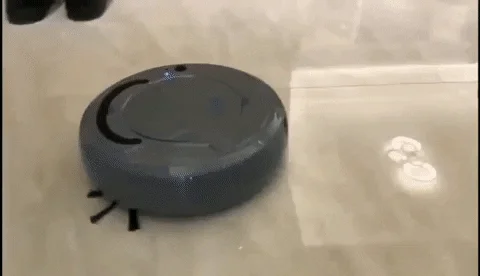

La robótica doméstica es un campo en rápido crecimiento que se centra en el desarrollo y la aplicación de robots para el uso en el hogar. Estos robots están diseñados para ayudar con tareas diarias, mejorar la eficiencia y aumentar la comodidad de los usuarios en sus viviendas.
Los continuos avances en robótica y en domótica han hecho posible la irrupción de variadas clases de robots domésticos. Algunos se utilizan con el objetivo de facilitar las tareas rutinarias, lo que permite una mejor administración del tiempo por parte de sus dueños. Por otro lado, hay robots que se emplean para el ocio y/o entretenimiento.
algunas de las áreas clave de la robótica doméstica son la limpieza del hogar, Asistencia Personal, Cuidado de la salud, Cuidado del Bienestar, Seguridad del Hogar, etc.
Limpieza Del Hogar

Asistente Personal
Cabe destacar que a estos autómatas se les pueden asignar igualmente labores de seguridad, atención a personas mayores, vigilancia u otra tarea que se estime conveniente. Con el paso del tiempo, este tipo de robots se han tornado más conocidos y populares, principalmente por la expansión de la robótica y la disminución de los costos de producción de los mismos, logrando así su implementación en el mercado.
Los robots en el hogar ofrecen múltiples beneficios, como el ahorro de tiempo al asumir tareas repetitivas, permitiendo que los humanos se concentren en otras actividades. Además, mejoran la eficiencia y consistencia de las labores domésticas al realizarlas de manera precisa y constante. También facilitan el acceso a la tecnología para personas mayores o con discapacidades, incrementando su independencia y calidad de vida.
Los desafíos de los robots domésticos incluyen su costo, ya que, aunque los precios han bajado, los modelos avanzados siguen siendo caros para muchos hogares. Además, requieren mantenimiento regular y reparaciones que pueden ser costosas. Por último, los robots conectados a internet son vulnerables a ataques cibernéticos, lo que plantea riesgos significativos para la seguridad y privacidad.
Futuro de la Robótica Domestica
El futuro de la robótica doméstica se vislumbra como una era de innovación continua, prometiendo hacer que los robots sean más asequibles, eficientes y multifuncionales. Se espera una integración más profunda con el Internet de las Cosas (IoT), lo que permitirá una mayor interconexión y coordinación entre diferentes dispositivos en el hogar.
Uno de los puntos de partida que nos ayudan a darnos cuenta del futuro que nos aproxima en la robotica son las actuales inteligencias artificiales capaces de poder interactuar en su entorno, el futuro de la robótica en la IA, especialmente en lo que respecta a la capacidad de hablar, está evolucionando rápidamente y tiene un potencial significativo para transformar diversas industrias. Para implementar audios en tu investigación y blog de HTML, es importante entender las tendencias actuales y las tecnologías emergentes. Aquí hay algunos puntos clave sobre el futuro de la robótica y la IA en la capacidad de hablar, así como una guía sobre cómo integrar audios en tu contenido HTML:
Asimismo, los avances en inteligencia artificial y aprendizaje automático seguirán potenciando la capacidad de los robots para comprender y anticipar las necesidades de los usuarios. Desde robots especializados en tareas específicas, como limpieza y mantenimiento del hogar, hasta la inclusión de la inteligencia artificial generativa para adaptarse a diferentes entornos y la introducción de cobots y manipuladores móviles que pueden colaborar de manera segura con los humanos, la robótica doméstica está en constante evolución.
Además, la sostenibilidad se ha convertido en una preocupación importante, llevando a los fabricantes a utilizar materiales reciclados y diseños energéticamente eficientes para reducir el impacto ambiental de estos dispositivos. Otro aspecto crucial es el mercado de tecnología para la tercera edad, donde los robots están diseñados para ayudar a las personas mayores a mantener su independencia y mejorar su calidad de vida.
El modelo de negocio de robots como servicio (RaaS) también está ganando terreno, lo que facilita el acceso a estas tecnologías avanzadas para una amplia gama de consumidores y empresas. Sin embargo, los desafíos persisten, especialmente en el desarrollo de robots humanoides que puedan navegar eficazmente en entornos domésticos no estructurados. A pesar de estos obstáculos, la integración de tecnologías como la inteligencia artificial y el Internet de las Cosas (IoT) está permitiendo el mantenimiento predictivo de robots domésticos, lo que mejora su eficiencia y reduce el tiempo de inactividad.